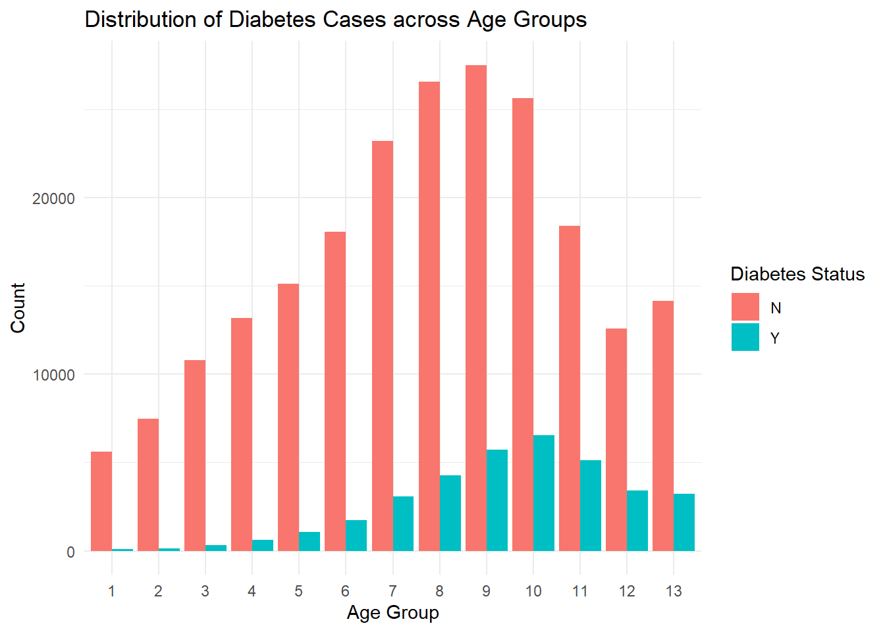

In this project I’ll be working with the Diabetes Health Indicators Dataset which can be found at www.kaggle.com/datasets/alexteboul/diabetes-health-indicators-dataset/. Specifically, I will be looking at the diabetes_binary_health_indicators_BRFSS2015.csv data. There are many variables in this dataset, but for the purposes of this project, I will be limiting the scope to the following variables: Diabetes_binary, HighBP, HighChol, Smoker, PhysActivity, Age, and BMI. Each of these variables is categorical except for BMI. Diabetes_binary is the response variable, where 0 represents no diabetes and 1 represents prediabetes or diabetes. The rest of the variables are predictors of Diabetes_binary, where HighBP at level 0 indicates no high blood pressure and 1 indicates high blood pressure, HighChol at level 0 indicates no high cholesterol and 1 indicates high cholesterol, Smoker at level 0 indicates that the person hasn’t smoked at least 100 cigarettes in their life and 1 indicates that they have, and PhysActivity at level 0 indicates no physical activity in the last 30 days (not including a job) and 1 indicates physical activity. Age is a 13 level categorical variable, from younger to older age groups in ascending order. Lastly, BMI is a numeric variable that represents the body mass index.
The purpose of this exploratory data analysis is to summarize the response variable and three of the predictors (both univariate and bivariate analyses will be performed): BMI, PhysActivity, and Age. These three predictors were chosen as they are commonly cited as some of the most important risk factors of developing type II diabetes. For example, this article says, “Being overweight, being physically inactive, [and] getting older… have long been identified as important risk factors for T2DM” (https://pmc.ncbi.nlm.nih.gov/articles/PMC10518250/). In this project, the ultimate goal of modeling is to find the model that best predicts Diabetes_binary. This will be achieved by analyzing relationships between variables and ultimately minimizing some metric (log loss).
Data
library(tidyverse)diabetes <-read_csv("data/diabetes_binary_health_indicators_BRFSS2015.csv")# check if there are any na valueshas_na <-any(is.na(diabetes))# check data to make sure categorical variables are actually categoricalstr(diabetes |>select(Diabetes_binary, Age, BMI, PhysActivity))
The variables are as expected, with Diabetes_binary, Age, and PhysActivity representing categorical variables, and Age representing a numeric variable. There are no missing values in the data set.
Diabetes_binary Age BMI PhysActivity
Min. :0.0000 Min. : 1.000 Min. :12.00 Min. :0.0000
1st Qu.:0.0000 1st Qu.: 6.000 1st Qu.:24.00 1st Qu.:1.0000
Median :0.0000 Median : 8.000 Median :27.00 Median :1.0000
Mean :0.1393 Mean : 8.032 Mean :28.38 Mean :0.7565
3rd Qu.:0.0000 3rd Qu.:10.000 3rd Qu.:31.00 3rd Qu.:1.0000
Max. :1.0000 Max. :13.000 Max. :98.00 Max. :1.0000
# A tibble: 2 × 2
# Groups: Diabetes_binary [2]
Diabetes_binary most_common_age_group
<fct> <ord>
1 N 9
2 Y 10
People with diabetes had higher average BMI (32 vs. 28) and reported less physical activity (63% vs. 78%) than those without diabetes. The most common age group was slightly older in the diabetic group (group 10 vs. group 9). These summary statistics align with expectations: individuals with diabetes had higher BMI, lower physical activity, and tended to be older. This supports the hypothesis that these factors are associated with developing diabetes
The Bar Plot of Diabetes Status shows a significant class imbalance, with many more instances of no diabetes than having diabetes. Even though there’s class imbalance, the minority class (diabetic) still has more than 25,000 instances, which is a large enough sample to provide meaningful insights. The Bar Plot of Age shows a slight class imbalance, but again there are plenty of instances of each class. The Histogram of BMI shows that most instances cluster around about 27, with only a few outliers on the higher end. The Bar Plot of PhysActivity shows a class imbalance, but once again there are enough instances in each class to provide meaningful insights and stable estimates.
# bivariate Age by Diabetes_binary plot (bar plot)ggplot(diabetes, aes(x = Age, fill =factor(Diabetes_binary))) +geom_bar(position ="dodge") +labs(title ="Distribution of Diabetes Cases across Age Groups",x ="Age Group", y ="Count", fill ="Diabetes Status") +theme_minimal()

# bivariate BMI by Diabetes_binary plot (smoothed histogram)ggplot(diabetes |>filter(BMI <70), aes(x = BMI)) +geom_density(alpha =0.5, aes(fill =factor(Diabetes_binary))) +scale_fill_discrete(name ="Diabetes Status") +labs(title ="BMI Distribution by Diabetes Status", x ="BMI", y ="Density")
Diabetes
Physical Activity N Y
N 48701 13059
Y 169633 22287
The Distribution of Diabetes Cases across Age Groups plot shows the general trend that the diabetic group is more associated with older individuals (the diabetic group is centered further to the right than the group without diabetes). The BMI Distribution by Diabetes Status shows the trend that the diabetic group tends to have a higher BMI than the group without diabetes (again, the diabetic group is centered further to the right). The contingency table shows that most individuals reported being physically active, and among them, the rate of diabetes was lower (about 12%) compared to those who were inactive (about 21%). All of this supports the idea that old age, high BMI, and low physical activity are important risk factors for diabetes.